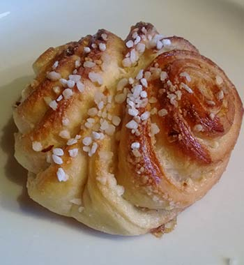
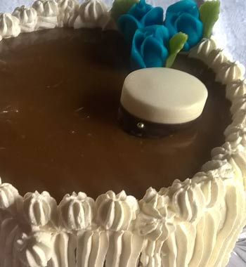
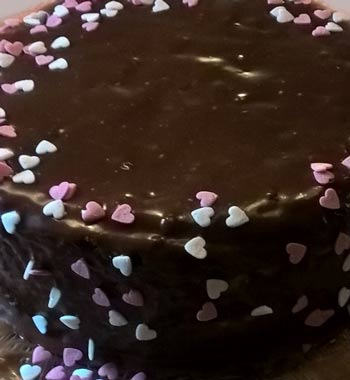

Dig's Cafe
Dig's CafeMansikkakakku

Mansikkakakku kuuluu ehdottomasti kesän juhlapöytään. Kakkua saa tosi ympärivuoden, mutta suomalaisten mansikoiden sesongin ulkopuolella käytämme espanjalaisia mansikoita. Välissä on aidosta kermassa tehty vaahto ja mansikkahilloa.
Korvapuustit
Meidän tosi herkulliset korvapuustit täytetään pähkinärouheella. Tilauksesta toki saat myös perinteisiä kanelitäytteisiä puusteja.
Kinuskikakku
Kinuskikakukun kuorutus tehdään kermasta ja fariinisokerista. Täyteenä on valkosuklaakermavaahtoa ja vadelmaa. Toinen mahdollinen marjatäyte on lakka.
Suklaakakku
Tämä herkullinen kakku vamistetaan Fazerin sinisestä. Täyteenä on kirsikkahillloa ja suklaarahkaraita.